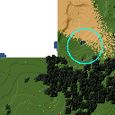
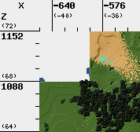
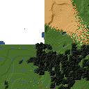
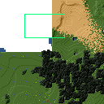
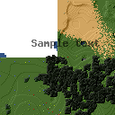

--draw[map]<figure> "<geometry> <color> [<text>]"Draw a figure on the map, with the given geometry and color.
Possible figures are:
- circle
- ellipse (which is a synonym for circle)
- line
- arrow
- point (which uses simple coordinates (x,y) instead of a geometry)
- rectangle
- text (which uses simple coordinates (x,y) instead of a geometry)
If
--draw<figure>is used, the geometry specifies world coordinates; if--drawmap<figure>is used, the geometry specifies map (i.e. image) coordinates, where 0,0 is the top-left corner of the map-part of the image, and coordinates increase to the right and down. Any points in the left and top scale area (if present) have negative coordinates.Note that the combination of geometry and color (and text if applicable) must be a single argument. This means that they must be enclosed in quotes together on the command-line, else they will be misinterpreted as two or more command-line arguments.
Example:
minetestmapper --drawcircle "10,10:6x6 red"For the color of figures, an alpha value can be specified. Note that due to a bug in the drawing library, this has not the expected effect when drawing circles and ellipses.
See also Geometry Syntax_ and Color Syntax_.
Interaction of figure geometry and map scaling
If the map is scaled, figures could either keep the same size in pixels, or the same size relative to the world, which would make them appear smaller like the entire map. Whether they scale of not depends on how they are drawn:
- Figures which are drawn using map (i.e. image) coordinates are never scaled. It is assumed that it was the intention to draw them on the image to begin with, and not in the world.
At the moment, figures which are drawn using world coordinates may or may not scale with the world.
- If the geometry of a figure is specified using 2 corners, then the distance between the coordinates obviously scales with the world, and the resulting figure will be visually smaller as well.
- If the geometry of a figure is specified using a corner or the center and dimensions, then the corner or center is obviously also interpreted as world-coordinates, but the dimensions will be interpreted relative to the image. I.e. they won't scale with the map.
- If the geometry is specified using an angle and length, and if the length is specified in nodes (e.g. '20n'), the size will scale. If the length is specified in pixels (e.g. '20p') or if no unit is specified, then the size will not scale.
In practise this means that two identically-sized figures in a full-scale map, may have different sizes after scaling, depending on how their geometry was specified. The jury is still out as to whether this is a bug or a feature.
--draw[map]circle "<geometry> <color>"Draw a circle on the map, with the given geometry and color.
If the geometry does not specify equal horizontal and vertical dimensions, then an ellipse will be drawn.
See --draw[map] for details.
An example circle:

--draw[map]ellipse "<geometry> <color>"Draw an ellipse on the map. This is a synonym for
--draw[map]circle.See --draw[map] for details.
--draw[map]line "<geometry> <color>"Draw a line on the map, with the given geometry and color.
See --draw[map] for details.
An example line:
--draw[map]arrow "<geometry> <color>"Draw an arrow on the map, with the given geometry and color.
See --draw[map] for details.
An example arrow:

--draw[map]point "<x>,<y> <color>"Draw a point on the map, at the given location, using the given color.
See --draw[map] for details.
An example point (red, in te white area):

--draw[map]rectangle "<geometry> <color>"Draw a reactangle on the map, with the given geometry and color.
See --draw[map] for details.
An example rectangle:

--draw[map]text "<x>,<y> <color> <text>"Write text on the map, at the specified location, using the given color.
The text can consist of any number of words. Be careful when using characters that the command shell may interpret, like '
"', '$', etc. On unix-like systems, use single quotes to avoid interpretation of most characters (except for'itself).Due to a limitation of the drawing library, currently only text that can be represented in (i.e. converted to) the ISO8859-2 character set is supported. Text that uses non-compatible characters will not be rendered correctly.
Note that the combination of geometry, color and text should be a single argument. This means that they must be enclosed in quotes together on the command-line, else they will be misinterpreted as three command-line arguments.
Example:
minetestmapper --drawtext "20,-10 red This text will be on the map"See also --draw[map] for more details.
Example text:
